Aneka Masakan Daerah
Berbagai Pilihan Daerah
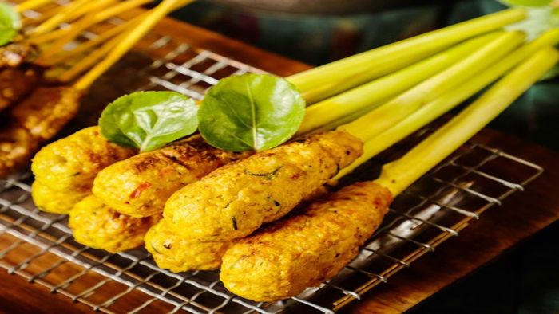


Bali
Sate lilit adalah salah satu hidangan ikonik dari Pulau Bali yang memiliki bentuk dan cara penyajian berbeda dari sate pada umumnya. Jika sate biasanya ditusuk dengan lidi, sate lilit justru dililitkan pada batang serai, bambu, atau kayu. Bahan utamanya adalah daging ikan cincang yang dicampur dengan kelapa parut dan aneka bumbu khas Bali seperti kunyit, lengkuas, kencur, dan cabai. Campuran tersebut kemudian dililitkan pada batang serai, lalu dibakar di atas bara arang hingga matang merata. Aroma wangi serai berpadu dengan rasa gurih dan sedikit pedas menciptakan sensasi tersendiri. Sate lilit biasa disajikan bersama nasi putih hangat, sambal matah, dan plecing kangkung. Hidangan ini menjadi salah satu kuliner wajib coba bagi wisatawan yang berkunjung ke Bali.
Bali
Lawar adalah hidangan tradisional Bali yang terbuat dari campuran sayuran, kelapa parut, dan daging cincang. Bumbu utamanya adalah base genep, yaitu campuran rempah khas Bali seperti kunyit, kencur, lengkuas, dan terasi. Ada dua jenis lawar: lawar putih dan lawar merah. Lawar merah menggunakan darah segar sebagai salah satu bahannya, sedangkan lawar putih tidak. Hidangan ini biasanya disajikan dalam upacara adat dan acara keluarga. Rasanya gurih, sedikit pedas, dengan aroma rempah yang kuat. Lawar sering disantap bersama nasi putih hangat dan ayam betutu.
Bali
Ayam betutu adalah hidangan khas Bali yang dibuat dari ayam utuh yang diisi dengan bumbu rempah kaya rasa. Ayam yang telah dibersihkan dilumuri bumbu halus yang terdiri dari kunyit, kencur, lengkuas, serai, cabai, dan aneka rempah lainnya. Setelah itu, ayam dibungkus dengan daun pisang dan daun pinang, lalu dimasak dengan cara dibakar atau dikukus dalam waktu lama hingga dagingnya empuk dan bumbunya meresap sempurna. Proses memasak yang panjang inilah yang membuat ayam betutu memiliki cita rasa khas dan tekstur daging yang sangat lembut. Aroma rempahnya kuat, dengan perpaduan rasa pedas, gurih, dan sedikit manis. Ayam betutu sering disajikan dalam upacara adat Bali maupun sebagai hidangan istimewa di restoran.
Bali
Jaja adalah sebutan untuk aneka kue tradisional Bali yang biasanya terbuat dari tepung beras, ketan, gula merah, dan kelapa parut. Ada banyak jenis jaja, seperti jaja klepon, jaja lupis, jaja pisang, dan jaja sumping. Kue-kue ini sering disajikan dalam upacara adat dan hari raya. Rasanya manis, gurih, dan legit, dengan aroma kelapa dan gula merah yang khas. Jaja biasanya disantap sebagai camilan bersama teh atau kopi. Bentuk dan warnanya beragam, mencerminkan kekayaan budaya Bali. Meskipun sederhana, jaja memiliki makna filosofis dalam tradisi Bali dan menjadi bagian tak terpisahkan dari kehidupan masyarakat setempat.
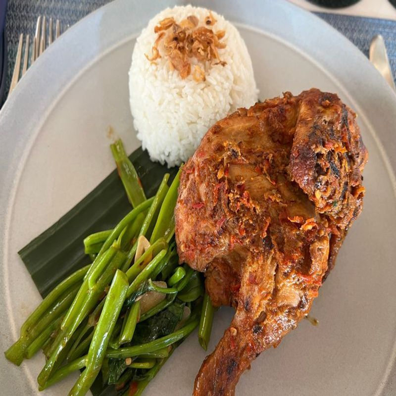
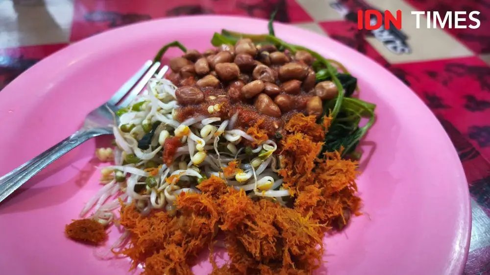
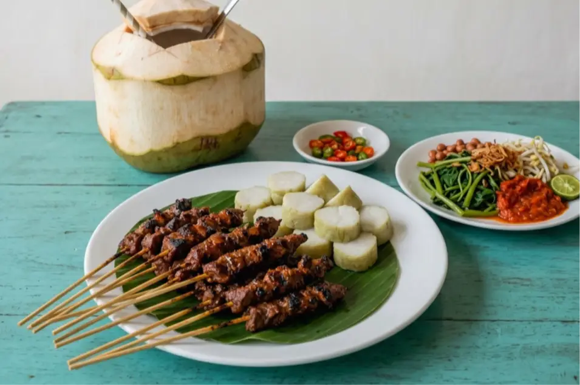
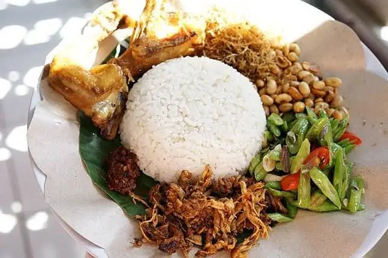
Lombok
Ayam Taliwang adalah hidangan khas Lombok yang dibuat dari ayam kampung muda yang dibakar atau digoreng, lalu disiram dengan bumbu pedas khas Taliwang. Bumbunya terbuat dari cabai merah, bawang merah, bawang putih, terasi, kencur, dan gula merah. Rasanya pedas, gurih, dan sedikit manis. Ayam Taliwang biasanya disajikan bersama plecing kangkung dan nasi putih hangat. Hidangan ini menjadi salah satu ikon kuliner Lombok yang wajib dicoba.
Lombok
Plecing Kangkung adalah hidangan sayur khas Lombok yang terbuat dari kangkung rebus yang disiram dengan sambal plecing. Sambalnya terbuat dari cabai, tomat, terasi, dan jeruk limau. Rasanya segar, pedas, dan sedikit asam. Plecing Kangkung biasanya disajikan sebagai pendamping Ayam Taliwang. Hidangan ini cocok dinikmati bersama nasi putih hangat.
Lombok
Rembiga adalah hidangan khas Lombok yang terbuat dari daging sapi yang dibumbui dengan rempah-rempah khas. Dagingnya empuk, rasanya pedas, gurih, dan kaya rempah. Rembiga biasanya disajikan sebagai lauk pendamping nasi putih hangat. Hidangan ini menjadi salah satu kuliner khas Lombok yang banyak dicari wisatawan.
Lombok
Puyung adalah hidangan khas Lombok yang terbuat dari daging ayam atau sapi yang dimasak dengan bumbu khas. Rasanya gurih, pedas, dan kaya rempah. Puyung biasanya disajikan sebagai lauk pendamping nasi putih hangat. Hidangan ini menjadi salah satu kuliner khas Lombok yang banyak dicari wisatawan.
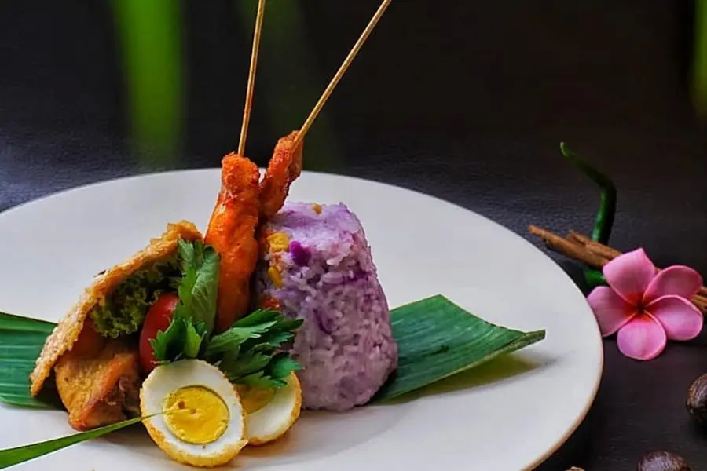
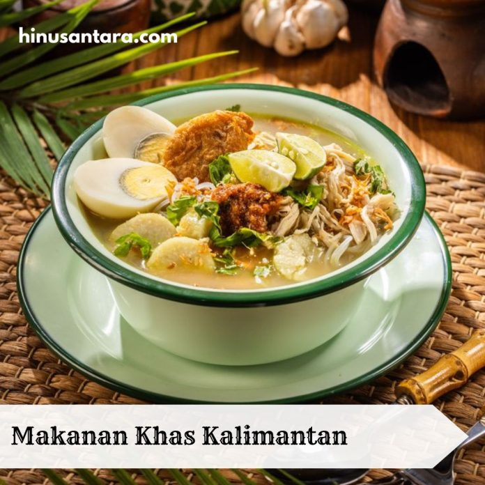
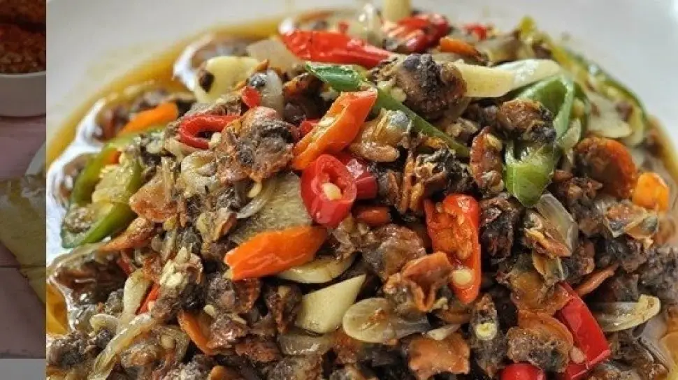
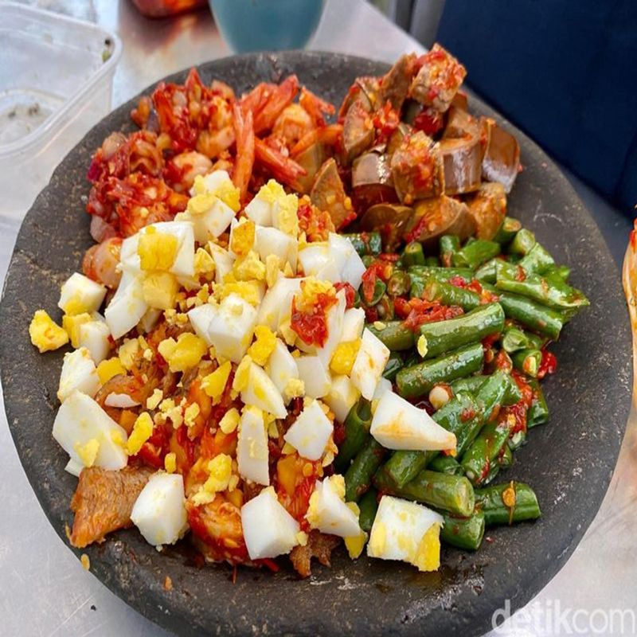
Kalimantan
Nasi Subut adalah hidangan khas Kalimantan yang terbuat dari nasi putih yang disajikan dengan aneka lauk pauk khas daerah. Nasi Subut biasanya disantap bersama ikan bakar, ayam, dan sambal khas Kalimantan. Rasanya gurih, pedas, dan kaya rempah. Hidangan ini menjadi salah satu kuliner khas Kalimantan yang banyak dicari wisatawan.
Kalimantan
Soto Banjar adalah hidangan khas Kalimantan Selatan yang terbuat dari kuah bening dengan isian ayam, telur, dan lontong. Bumbunya kaya rempah seperti kayu manis, cengkeh, dan kapulaga. Rasanya gurih, segar, dan sedikit manis. Soto Banjar biasanya disajikan bersama perkedel dan sambal. Hidangan ini menjadi salah satu ikon kuliner Kalimantan Selatan yang wajib dicoba.
Kalimantan
Tudai adalah hidangan khas Kalimantan yang terbuat dari ikan sungai yang dibumbui dengan rempah-rempah khas. Ikan Tudai biasanya dibakar atau digoreng, lalu disiram dengan sambal khas Kalimantan. Rasanya gurih, pedas, dan kaya rempah. Tudai biasanya disajikan sebagai lauk pendamping nasi putih hangat.
Kalimantan
Nasi Bekepor adalah hidangan khas Kalimantan yang terbuat dari nasi yang dimasak bersama aneka lauk dan bumbu, lalu dibungkus dengan daun pisang. Nasi Bekepor biasanya berisi nasi, ikan, dan sambal khas Kalimantan. Rasanya gurih, pedas, dan aroma daun pisangnya khas. Hidangan ini menjadi salah satu kuliner khas Kalimantan yang banyak dicari wisatawan.
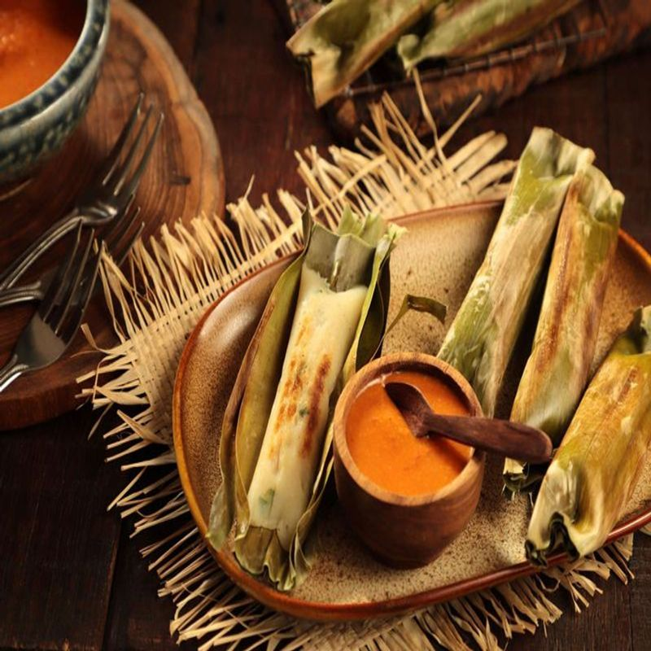


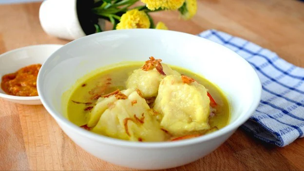
Palembang
Otak-otak adalah hidangan khas Palembang yang terbuat dari ikan giling yang dicampur dengan bumbu dan tepung, lalu dibungkus daun pisang dan dikukus atau dibakar. Rasanya gurih, kenyal, dan aroma daun pisangnya khas. Otak-otak biasanya disajikan dengan kuah cuka atau sambal khas Palembang. Hidangan ini menjadi salah satu kuliner khas Palembang yang banyak dicari wisatawan.
Palembang
Brengkes Patin adalah hidangan khas Palembang yang terbuat dari ikan patin yang dibumbui dengan rempah-rempah khas, lalu dibungkus daun pisang dan dibakar. Rasanya gurih, pedas, dan aroma daun pisangnya khas. Brengkes Patin biasanya disajikan sebagai lauk pendamping nasi putih hangat. Hidangan ini menjadi salah satu kuliner khas Palembang yang wajib dicoba.
Palembang
Celimpungan adalah hidangan khas Palembang yang terbuat dari ikan giling yang dicampur dengan tepung, lalu dibentuk bulat dan direbus. Rasanya gurih, kenyal, dan disajikan dengan kuah kuning khas Palembang. Celimpungan biasanya disantap bersama nasi putih hangat. Hidangan ini menjadi salah satu kuliner khas Palembang yang banyak dicari wisatawan.
Palembang
Tekwan adalah hidangan khas Palembang yang terbuat dari ikan giling yang dicampur dengan tepung, lalu dibentuk bulat kecil dan direbus. Rasanya gurih, kenyal, dan disajikan dengan kuah udang khas Palembang. Tekwan biasanya disantap bersama soun, jamur, dan bengkuang. Hidangan ini menjadi salah satu kuliner khas Palembang yang banyak dicari wisatawan.
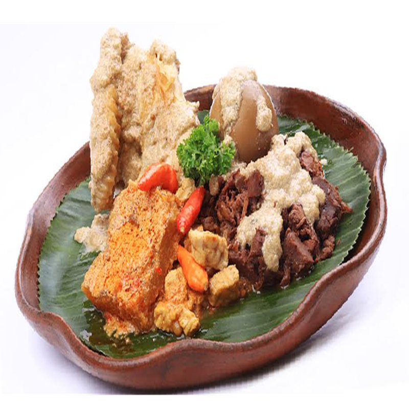
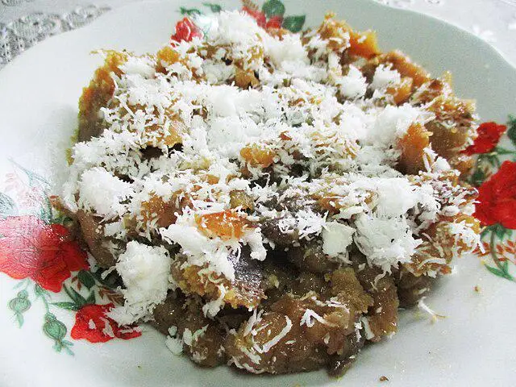
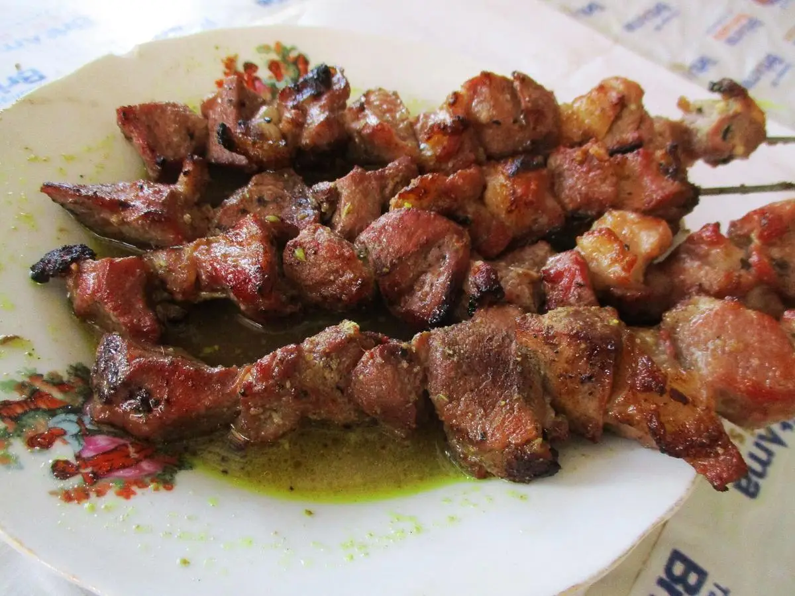
Yogyakarta
Gudeg adalah hidangan khas Yogyakarta yang terbuat dari nangka muda yang dimasak dengan santan dan rempah-rempah khas. Rasanya manis, gurih, dan legit. Gudeg biasanya disajikan bersama nasi putih, ayam kampung, telur, dan sambal krecek. Hidangan ini menjadi salah satu ikon kuliner Yogyakarta yang wajib dicoba.
Yogyakarta
Gatot adalah makanan khas Yogyakarta yang terbuat dari singkong yang dikeringkan, lalu dimasak dengan gula merah dan kelapa parut. Rasanya manis, gurih, dan legit. Gatot biasanya disajikan sebagai camilan atau makanan penutup. Hidangan ini menjadi salah satu kuliner khas Yogyakarta yang banyak dicari wisatawan.
Yogyakarta
Geplak adalah camilan khas Yogyakarta yang terbuat dari kelapa parut yang dicampur dengan gula merah dan gula pasir, lalu dibentuk bulat atau kotak. Rasanya manis dan legit. Geplak biasanya disajikan sebagai oleh-oleh khas Yogyakarta. Hidangan ini menjadi salah satu kuliner khas Yogyakarta yang banyak dicari wisatawan.
Yogyakarta
Sate Klatak adalah hidangan khas Yogyakarta yang terbuat dari daging kambing yang ditusuk dengan jeruji besi, lalu dibakar di atas bara arang. Bumbunya sederhana, hanya garam dan sedikit rempah. Rasanya gurih, juicy, dan aroma bakarnya khas. Sate Klatak biasanya disajikan bersama gulai dan nasi putih hangat. Hidangan ini menjadi salah satu kuliner khas Yogyakarta yang wajib dicoba.
Aneka Masakan Daerah Nusantara
Aneka Masakan Daerah adalah sebuah galeri kuliner digital yang memperkenalkan keanekaragaman masakan tradisional Indonesia dari berbagai daerah, mulai dari Bali, Lombok, Kalimantan, Palembang, hingga Yogyakarta. Setiap hidangan disajikan lengkap dengan gambar, asal daerah, dan deskripsi singkat yang menggambarkan cita rasa serta filosofi di baliknya.
Tujuan kami adalah melestarikan warisan kuliner Nusantara agar tetap dikenal oleh generasi muda dan wisatawan. Melalui tampilan yang sederhana namun menarik, kami berharap dapat menjadi jendela bagi siapa saja yang ingin menjelajahi kekayaan rasa Indonesia.
Daerah
Hidangan
Kuliner Lokal